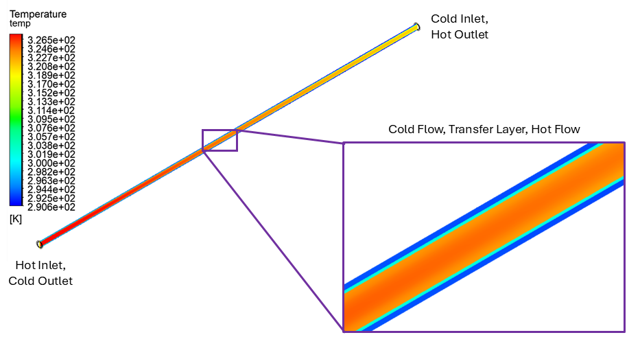
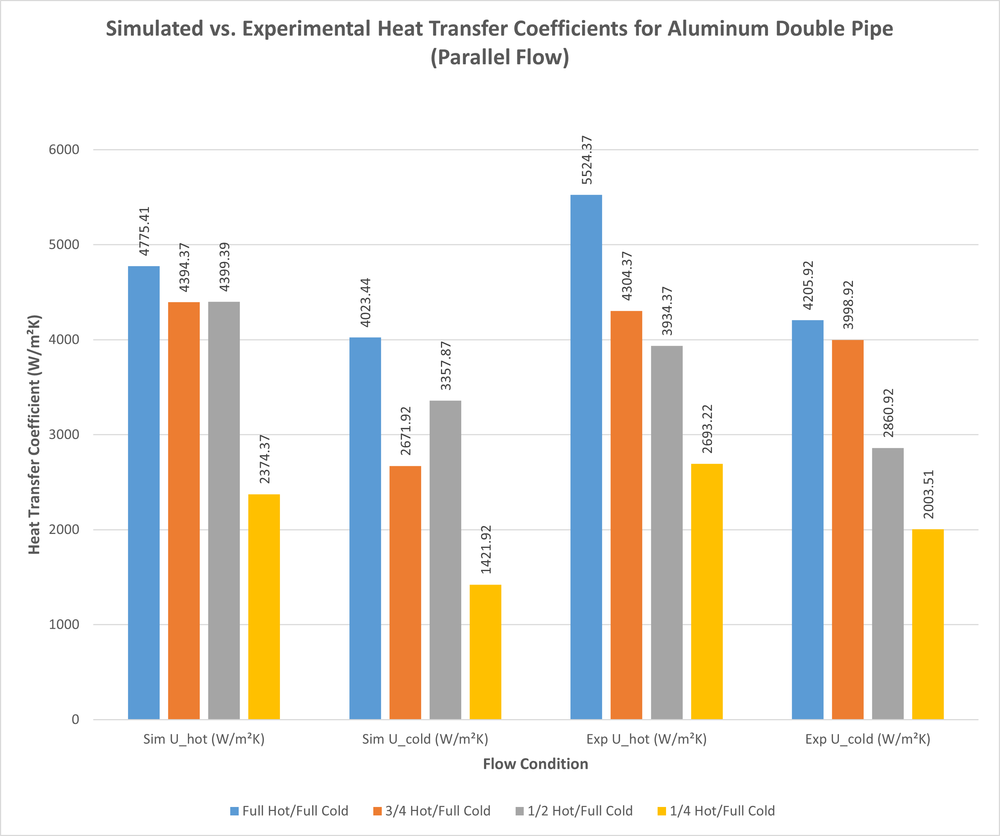
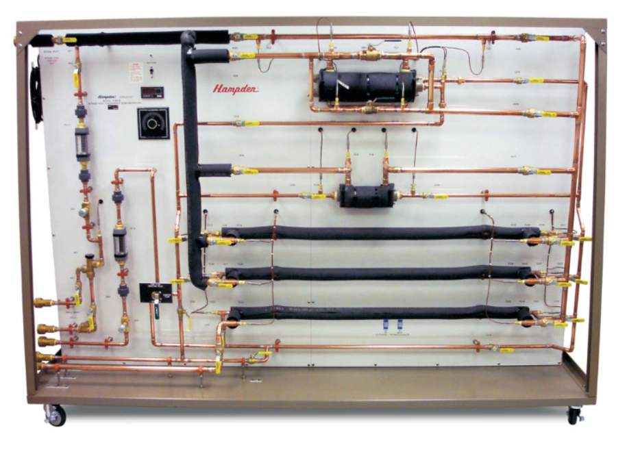

Heat Exchanger Analysis & Simulation
This project involved a comprehensive analysis of shell and tube, cross flow, and double pipe heat exchangers in parallel and counter flow configurations. Through experimental testing, theoretical calculations, and computational simulations using ANSYS Fluent, we evaluated heat transfer efficiency and system performance under varying conditions. The goal was to compare the effectiveness of different heat exchanger types and flow arrangements, providing insights into optimizing thermal systems.
Relevant Skills
Outcomes
This project delivered a thorough assessment of heat exchanger performance, yielding valuable insights into optimizing thermal systems for a wide range of industrial applications. The analysis explored how various design configurations, flow dynamics, and material choices influence heat transfer efficiency, revealing key principles that enhance system performance. A significant finding was the advantage of certain flow arrangements in maintaining effective temperature gradients, a factor critical to improving energy efficiency in sectors such as manufacturing, energy production, and climate control systems. By employing computational fluid dynamics (CFD) simulations alongside experimental methods, I evaluated how real-world variables—like flow conditions and system wear—impact thermal outcomes, refining my approach to engineering design.
CFD Model - ANSYS Fluent
Temeprature contour for double pipe heat exchanger.
Heat Transfer Coefficients
Heat transfer coefficients derived from experimental and simulated analyses were compared for all heat exchangers.
Heat Transfer Coefficients
A Hampden Model H-6878 6 Pass Heat Exchanger used to conduct experimental tests on double pipe heat exchangers.
